AI Automation & Chatbot Development
Using n8n, Make.com, Voiceflow, and VAPI, I build low-code workflow automations, engaging chatbots, voice agents, and autonomous callers that connect APIs, handle webhooks, and integrate seamlessly with platforms like Airtable, Supabase, Pipedrive, and more.
These solutions help teams reduce repetitive tasks, accelerate workflow operations, and scale processes efficiently - delivering noticeable gains in both efficiency and speed.
Smart Web Scraping & AI Email Personalization Flow
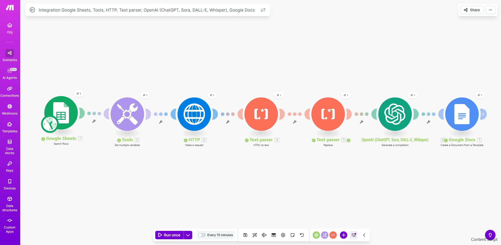
Google Maps Places + Coordinates Auto-Fetch Workflow
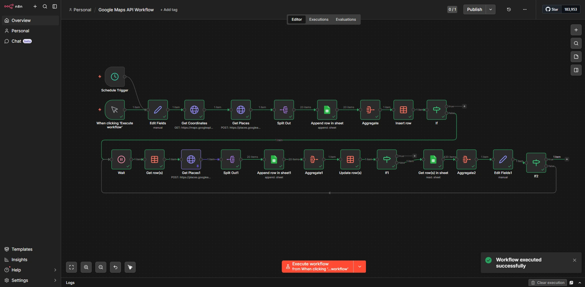
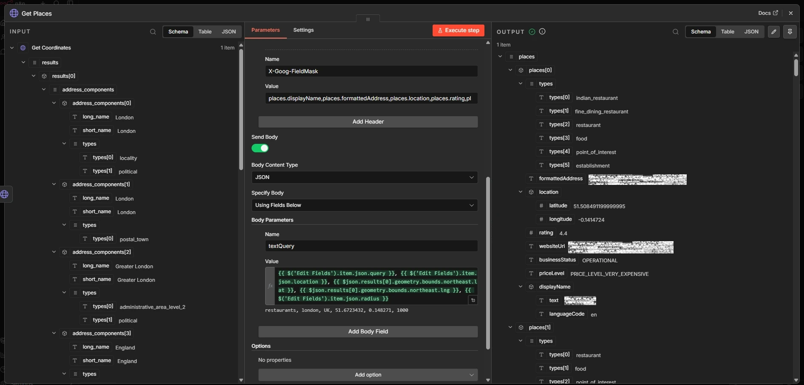
Gemini AI Agent: Smart Website Lookup & Company Data Enrichment
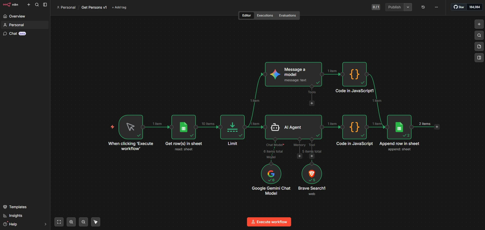
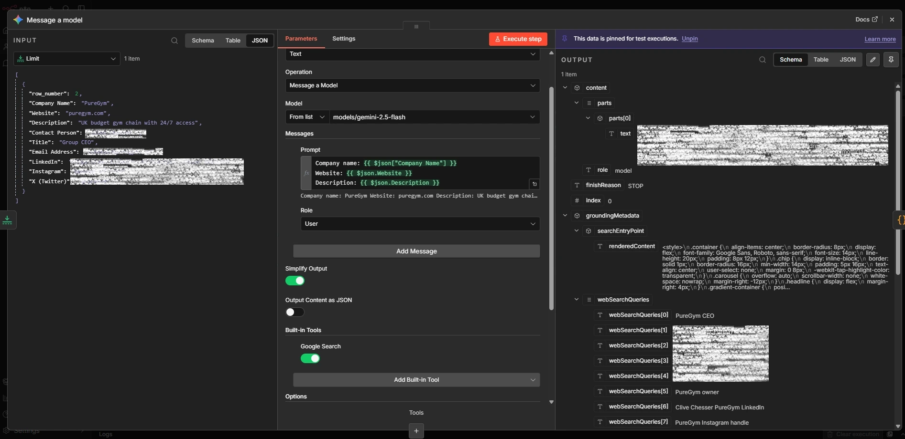
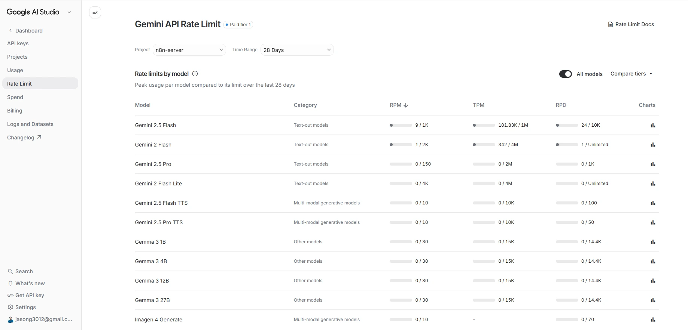
Automated Lead Email Discovery & Personalization with Hunter.io
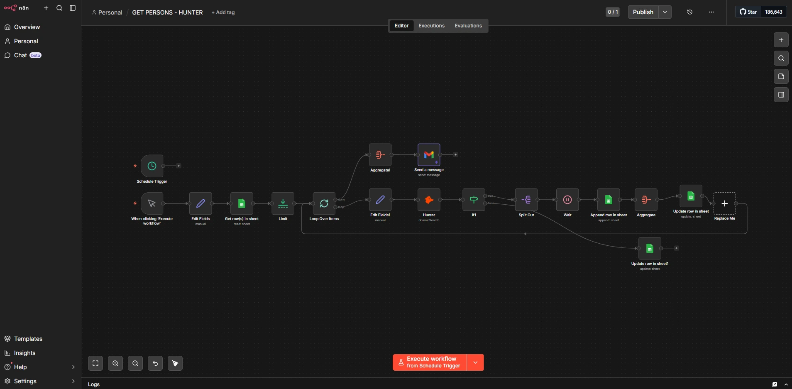
Veo 3 + Postiz: Automated AI Video Generation & Scheduled Posting
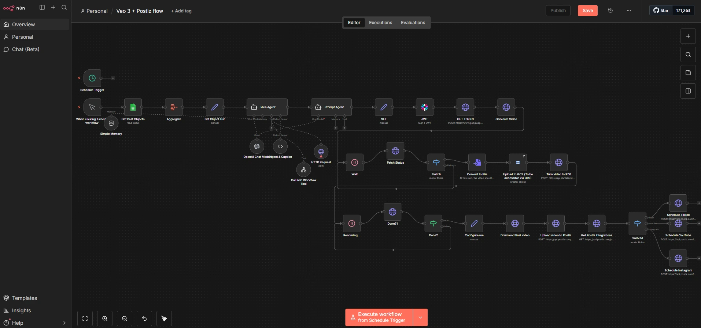
Simple yet Smart Q&A Agent
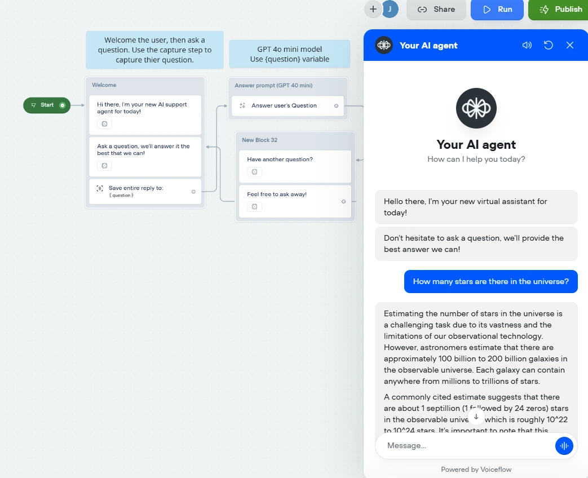
Personalized Fitness Chatbot - BMI-Driven Workout Plans
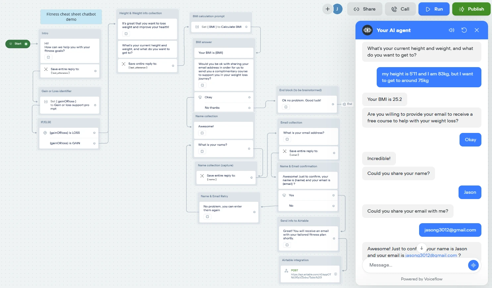
Lead Capture Chatbot with Airtable Integration
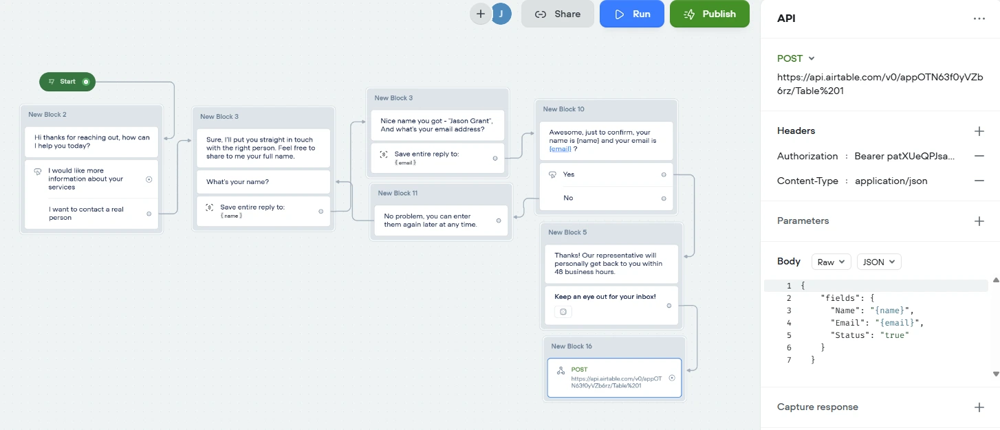
Book-a-Call Chatbot with Calendly Integration
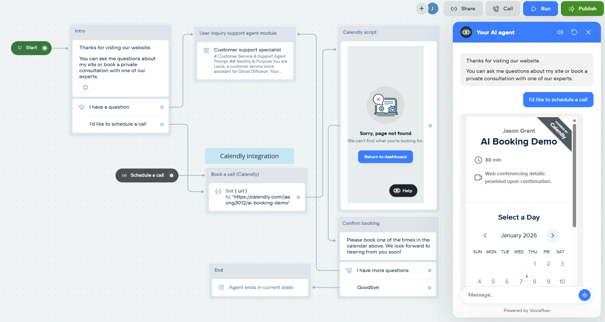